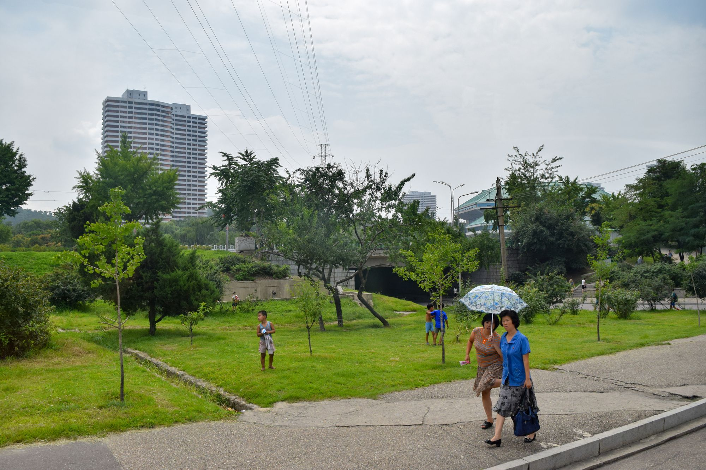
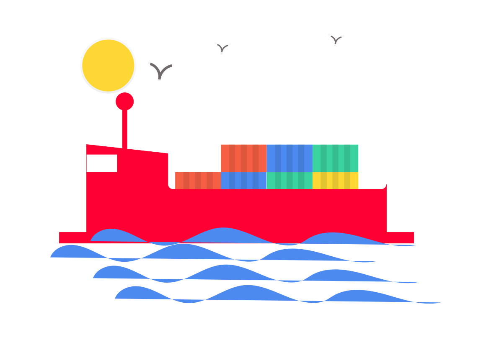

<?xml version="1.0" encoding="UTF-8"?><rss xmlns:dc="http://purl.org/dc/elements/1.1/" xmlns:content="http://purl.org/rss/1.0/modules/content/" xmlns:atom="http://www.w3.org/2005/Atom" version="2.0" xmlns:media="http://search.yahoo.com/mrss/"><channel><title><![CDATA[Steve Barker]]></title><description><![CDATA[Blog]]></description><link>https://sgbarker.com/blog/</link><image><url>https://sgbarker.com/blog/favicon.png</url><title>Steve Barker</title><link>https://sgbarker.com/blog/</link></image><generator>Ghost 4.16</generator><lastBuildDate>Tue, 19 Oct 2021 19:14:15 GMT</lastBuildDate><atom:link href="https://sgbarker.com/blog/rss/" rel="self" type="application/rss+xml"/><ttl>60</ttl><item><title><![CDATA[How to host a highly scalable ghost publication for free]]></title><description><![CDATA[<p>TL;DR: Spin up a local container running Ghost, crawl the frontend to generate a static site, and upload to a free static host.</p><hr><p>While there&apos;s quite a few options for statically hosting written content for free, most of these involve using markdown as your writing interface. While</p>]]></description><link>https://sgbarker.com/blog/how-to-host-scalable-ghost-publication-for-free/</link><guid isPermaLink="false">6154cdbd91a8d10001bce862</guid><category><![CDATA[Software Engineering]]></category><dc:creator><![CDATA[Steve Barker]]></dc:creator><pubDate>Thu, 30 Sep 2021 09:20:28 GMT</pubDate><media:content url="https://sgbarker.com/blog/content/images/2021/09/Screenshot-2021-09-30-at-10.33.39.png" medium="image"/><content:encoded><![CDATA[<p>TL;DR: Spin up a local container running Ghost, crawl the frontend to generate a static site, and upload to a free static host.</p><hr><p>While there&apos;s quite a few options for statically hosting written content for free, most of these involve using markdown as your writing interface. While this is fine<em>, </em>I&apos;d prefer the block-based rich editor offered by <a href="https://sgbarker.com/blog/why-ghost/">Ghost</a>.</p><p><a href="https://sgbarker.com/blog/why-ghost/">Ghost Pro&apos;s pricing</a> is quite reasonable and a good option if you want to take advantage of all that Ghost has to offer. But if you just want a personal site without members, I&apos;ve found the best option is to run Ghost locally, and upload the rendered pages to a free static web hosting service. This tutorial will show you how.</p><h3 id="limitations">Limitations</h3><p><strong>[Skip this part if you don&apos;t care about the limitations and just want to get to the tutorial].</strong></p><p>It&apos;s important to understand a little about how Ghost works. The backend keeps state in a SQL datbase, and is accessed by a JSON API. Assets, such as images, <a href="https://ghost.org/themes/">themes</a> or logs are kept in &apos;storage&apos;, which can be on the filesystem of the server, in an S3-like object storage service, or in a container volume/mount. The other part of Ghost is the frontend, which out of the box is a theming system that uses handlebars.</p><figure class="kg-card kg-image-card kg-card-hascaption"><a href="https://ghost.org/docs/architecture/"></a><figcaption>Ghost architecture</figcaption></figure><p>Generating static HTML files from your locally running Ghost instance works for quite a few use cases, but clearly not for anything dynamic. For instance readers won&apos;t be able to sign up to your newsletter, as there won&apos;t be any server to handle the request. The following features won&apos;t work:</p><ul><li>Newsletters;</li><li>Memberships;</li><li>Post embargos;</li><li>Easy collaboration with others;</li><li>Anything else that requires clients to make a request other than for HTML/CSS. </li></ul><hr><h2 id="tutorial">Tutorial</h2><h3 id="how-to-run-ghost-locally">How to run Ghost locally</h3><p>I run my Ghost instance using Docker, which means it&apos;s easy to update and is isolated from my OS.</p><p>If you haven&apos;t got it already, you&apos;ll need to <a href="https://docs.docker.com/get-docker/">install Docker</a>.</p><p>To pull down the latest Ghost image, run <code>docker pull ghost</code></p><p>You&apos;ll now need to set up a folder where you can keep your Ghost content, this is things like images, themes, and your SQLite database. For instance: <code>/Users/steve/stuff/ghost-content</code> </p><p>Now, to run the Ghost container, execute the following, but substitute <code>my-blog</code> with whatever you want to call your container (doesn&apos;t really matter what), and <code>/Users/steve/stuff/ghost-content</code> with the location of your content folder that you created in the previous step.</p><pre><code class="language-bash">docker run -d --name my-blog -e url=http://localhost:3002 -p 3002:2368 -v /Users/steve/stuff/ghost-content:/var/lib/ghost/content ghost</code></pre><p>You should find that Ghost has populated your content folder with stuff:</p><figure class="kg-card kg-image-card kg-card-hascaption"><figcaption>What your content folder should look like now</figcaption></figure><p>Now, if you head to <a href="http://localhost:3002/">http://localhost:3002</a>, you should see that your publication is running! (You may need to wait ~1 minute if the container is still spinning up).</p><figure class="kg-card kg-image-card kg-card-hascaption"><figcaption>A fresh Ghost install</figcaption></figure><p>If you head to <a href="http://localhost:3002/ghost">http://localhost:3002/ghost</a>, this will display the admin page where you can set up your publication.</p><h3 id="generating-the-static-site">Generating the static site</h3><p>Now that you have Ghost running on your machine, you&apos;ll need to crawl the site to fetch the HTML files. For this I&apos;d reccommend <a href="https://github.com/Fried-Chicken/ghost-static-site-generator">Mr Mo&apos;s Ghost Static Site Generator</a>, (GSSG) which usefully does this job for us. Thanks Mr Mo.</p><p>Follow the instructions on <a href="https://github.com/Fried-Chicken/ghost-static-site-generator#readme">the GSSG readme</a> to install it.</p><p>Next, you&apos;ll need to create a folder that you want to store your static site in. Let&apos;s call it <code>/Users/steve/stuff/ghost-static</code> for now.</p><p>From your <code>ghost-static</code> folder, run the following command. You&apos;ll need to change the <code>--dest</code> to path of the folder you just created, and the <code>--url</code> from <code>yourdomain.com</code> to the actual domain you intend on hosting the site at:</p><pre><code>gssg --domain http://localhost:3002 --dest &apos;/Users/steve/stuff/ghost-static&apos; --url https://yourdomain.com</code></pre><p>You should now see GSSG fetching a load of files and putting them in your static directory.</p><figure class="kg-card kg-image-card kg-card-hascaption"><figcaption>This can take a few minutes</figcaption></figure><h3 id="uploading-to-the-internet">Uploading to the internet</h3><p>You&apos;ll need some kind of static hosting service. I think <a href="https://pages.cloudflare.com/">Cloudflare Pages</a> offers the best performance, ease of use and price, so I&apos;ll be using that. It&apos;s free for unlimited requests, bandwidth and sites, up to 500 builds per month ATTOW. You could also use something like GitHub Pages or Netlify.</p><p>Create a GitHub repo for your static site, then upload the contents of your static folder - by now this should contain an <code>index.html</code>, some <code>xml</code> files, and possibly a number of folders, depending on how much content you have.</p><h3 id="%E2%80%8Bsign-in-to-cloudflare-pages"><a href="https://developers.cloudflare.com/pages/get-started#sign-in-to-cloudflare-pages">&#x200B;</a>Sign in to Cloudflare Pages</h3><p>Go to the <a href="https://pages.dev">Cloudflare Pages site</a>, and sign in with your Cloudflare account. If you do not have an account yet, you can sign up as you go.</p><h3 id="%E2%80%8Bconnect-to-github"><a href="https://developers.cloudflare.com/pages/get-started#connect-to-github">&#x200B;</a>Connect to GitHub</h3><p>Signing in with GitHub allows <a href="https://pages.dev">Cloudflare Pages</a> to deploy your projects, update your GitHub PRs with <a href="https://developers.cloudflare.com/pages/platform/preview-deployments">preview deployments</a>, and more. After you sign in, select <strong>Create a project</strong> in the Pages dashboard.</p><p>You&apos;ll then need to point Cloudflare Pages to the GitHub repo containing your static site, after which you can configure some settings such as which directory it should point at. If you&apos;ve followed this tutorial closely, your static site should be stored in the root of the repo.</p><figure class="kg-card kg-image-card kg-card-hascaption"><figcaption>Configuring Cloudflare Pages for static Ghost hosting</figcaption></figure><p>Once the first deployment has finished, you can also set up your own domain name.</p><p>That&apos;s it! You now have your writing hosted on one of the world&apos;s fastest content delivery networks, that can handle a virtually &quot;unlimited&quot; amount of traffic, for free.</p><h2 id="going-further-and-optimising">Going further and optimising</h2><h3 id="backups">Backups</h3><p>If you ever want to spin up your local Ghost container, it&apos;s as simple as executing the <code>docker run</code> command from the start. However if you lose your content folder, then you&apos;ll lose all your posts and your ability to run your publication locally, so I strongly recommend you back it up.</p><h3 id="turning-off-dynamic-features">Turning off dynamic features</h3><p>As dynamic features of Ghost won&apos;t work for your users, I recommend turning as many of them off as possible. From the Ghost settings, you can head to memberships to turn off subscription access.</p><figure class="kg-card kg-image-card"></figure><p>You can also pick a theme that optimises for content delivery, rather than for more dynamic features of Ghost.</p><h3 id="deleting-posts">Deleting posts</h3><p>One small &apos;gotcha&apos; is that if a post is deleted or renamed, the original will stay in your static folder. To get around this, ensure you periodically purge your static folder before regenerating it.</p><h3 id="database">Database</h3><p>The database used by the official Docker image is SQLite, which is fine for our use case. The database will live in your content-folder/data, so you can easily make chagnes to the data or back it up.</p><hr><p>I hope you find this useful. Note, this is very much a <em>beta </em>workflow, so be wary of bugs.</p>]]></content:encoded></item><item><title><![CDATA[Photos of North Korea]]></title><description><![CDATA[<p>I spent some time in North Korea (<a href="https://en.wikipedia.org/wiki/North_Korea">DPRK</a>), via a specialist travel agency. I didn&apos;t get as many good photos as I would have liked, but below are some of the better ones.</p><figure class="kg-card kg-gallery-card kg-width-wide"><div class="kg-gallery-container"><div class="kg-gallery-row"><div class="kg-gallery-image"></div><div class="kg-gallery-image"></div><div class="kg-gallery-image"></div></div><div class="kg-gallery-row"><div class="kg-gallery-image"></div><div class="kg-gallery-image"></div></div></div></figure><figure class="kg-card kg-image-card"></figure><figure class="kg-card kg-image-card kg-width-wide kg-card-hascaption"><figcaption>Pyongyang with &quot;traffic lady&quot;</figcaption></figure><figure class="kg-card kg-gallery-card kg-width-wide"><div class="kg-gallery-container"><div class="kg-gallery-row"><div class="kg-gallery-image"></div><div class="kg-gallery-image"></div></div><div class="kg-gallery-row"><div class="kg-gallery-image"></div><div class="kg-gallery-image"></div></div></div></figure><figure class="kg-card kg-image-card kg-width-wide"></figure><figure class="kg-card kg-gallery-card kg-width-wide kg-card-hascaption"><div class="kg-gallery-container"><div class="kg-gallery-row"><div class="kg-gallery-image"></div><div class="kg-gallery-image"></div></div></div><figcaption>DMZ and painting</figcaption></figure><figure class="kg-card kg-image-card kg-width-wide"></figure><figure class="kg-card kg-gallery-card kg-width-wide"><div class="kg-gallery-container"><div class="kg-gallery-row"><div class="kg-gallery-image"></div><div class="kg-gallery-image"></div></div></div></figure><figure class="kg-card kg-gallery-card kg-width-wide"><div class="kg-gallery-container"><div class="kg-gallery-row"><div class="kg-gallery-image"></div><div class="kg-gallery-image"></div></div><div class="kg-gallery-row"><div class="kg-gallery-image"></div><div class="kg-gallery-image"></div></div></div></figure><figure class="kg-card kg-image-card kg-width-wide"></figure><figure class="kg-card kg-gallery-card kg-width-wide kg-card-hascaption"><div class="kg-gallery-container"><div class="kg-gallery-row"><div class="kg-gallery-image"></div><div class="kg-gallery-image"></div><div class="kg-gallery-image"></div></div><div class="kg-gallery-row"><div class="kg-gallery-image"></div><div class="kg-gallery-image"></div></div></div><figcaption>Various signs and sources of kitsch</figcaption></figure>]]></description><link>https://sgbarker.com/blog/photos-of-north-korea/</link><guid isPermaLink="false">6154a24567f29000013f9244</guid><category><![CDATA[Photography]]></category><dc:creator><![CDATA[Steve Barker]]></dc:creator><pubDate>Wed, 28 Jul 2021 17:04:57 GMT</pubDate><media:content url="https://sgbarker.com/blog/content/images/2021/09/North-Korea-1-2.jpg" medium="image"/><content:encoded><![CDATA[<p>I spent some time in North Korea (<a href="https://en.wikipedia.org/wiki/North_Korea">DPRK</a>), via a specialist travel agency. I didn&apos;t get as many good photos as I would have liked, but below are some of the better ones.</p><figure class="kg-card kg-gallery-card kg-width-wide"><div class="kg-gallery-container"><div class="kg-gallery-row"><div class="kg-gallery-image"></div><div class="kg-gallery-image"></div><div class="kg-gallery-image"></div></div><div class="kg-gallery-row"><div class="kg-gallery-image"></div><div class="kg-gallery-image"></div></div></div></figure><figure class="kg-card kg-image-card"></figure><figure class="kg-card kg-image-card kg-width-wide kg-card-hascaption"><figcaption>Pyongyang with &quot;traffic lady&quot;</figcaption></figure><figure class="kg-card kg-gallery-card kg-width-wide"><div class="kg-gallery-container"><div class="kg-gallery-row"><div class="kg-gallery-image"></div><div class="kg-gallery-image"></div></div><div class="kg-gallery-row"><div class="kg-gallery-image"></div><div class="kg-gallery-image"></div></div></div></figure><figure class="kg-card kg-image-card kg-width-wide"></figure><figure class="kg-card kg-gallery-card kg-width-wide kg-card-hascaption"><div class="kg-gallery-container"><div class="kg-gallery-row"><div class="kg-gallery-image"></div><div class="kg-gallery-image"></div></div></div><figcaption>DMZ and painting</figcaption></figure><figure class="kg-card kg-image-card kg-width-wide"></figure><figure class="kg-card kg-gallery-card kg-width-wide"><div class="kg-gallery-container"><div class="kg-gallery-row"><div class="kg-gallery-image"></div><div class="kg-gallery-image"></div></div></div></figure><figure class="kg-card kg-gallery-card kg-width-wide"><div class="kg-gallery-container"><div class="kg-gallery-row"><div class="kg-gallery-image"></div><div class="kg-gallery-image"></div></div><div class="kg-gallery-row"><div class="kg-gallery-image"></div><div class="kg-gallery-image"></div></div></div></figure><figure class="kg-card kg-image-card kg-width-wide"></figure><figure class="kg-card kg-gallery-card kg-width-wide kg-card-hascaption"><div class="kg-gallery-container"><div class="kg-gallery-row"><div class="kg-gallery-image"></div><div class="kg-gallery-image"></div><div class="kg-gallery-image"></div></div><div class="kg-gallery-row"><div class="kg-gallery-image"></div><div class="kg-gallery-image"></div></div></div><figcaption>Various signs and sources of kitsch</figcaption></figure><figure class="kg-card kg-image-card kg-width-wide kg-card-hascaption"><figcaption>People in China, taking a peek across the river to North Korea</figcaption></figure><figure class="kg-card kg-gallery-card kg-width-wide"><div class="kg-gallery-container"><div class="kg-gallery-row"><div class="kg-gallery-image"></div><div class="kg-gallery-image"></div></div><div class="kg-gallery-row"><div class="kg-gallery-image"></div><div class="kg-gallery-image"></div></div></div></figure><figure class="kg-card kg-image-card kg-width-wide"></figure><figure class="kg-card kg-image-card kg-width-wide"></figure><p></p>]]></content:encoded></item><item><title><![CDATA[My Ideal Fudge Recipe]]></title><description><![CDATA[<p>The only difficult thing about making delicious fudge is how long and at what temperature to cook it for.</p><h3 id="ingredients">Ingredients</h3><p><em>Makes: ~900g of fudge</em></p><!--kg-card-begin: markdown--><ul>
<li>550g demerara sugar</li>
<li>100g butter</li>
<li>170g golden syrup</li>
<li>1.5-2 tps sea salt flakes</li>
<li>30g maple syrup</li>
<li>350ml double cream</li>
<li>1 tsp vanilla extract</li>
</ul>
<!--kg-card-end: markdown--><p>Optional:</p><!--kg-card-begin: markdown--><ul>
<li>Sugar</li></ul>]]></description><link>https://sgbarker.com/blog/my-ideal-fudge-recipe/</link><guid isPermaLink="false">6154a24567f29000013f9241</guid><category><![CDATA[Recipes]]></category><dc:creator><![CDATA[Steve Barker]]></dc:creator><pubDate>Sat, 19 Dec 2020 17:08:49 GMT</pubDate><media:content url="https://sgbarker.com/blog/content/images/2020/12/12---Baking-3-1.jpg" medium="image"/><content:encoded><![CDATA[<p>The only difficult thing about making delicious fudge is how long and at what temperature to cook it for.</p><h3 id="ingredients">Ingredients</h3><p><em>Makes: ~900g of fudge</em></p><!--kg-card-begin: markdown--><ul>
<li>550g demerara sugar</li>
<li>100g butter</li>
<li>170g golden syrup</li>
<li>1.5-2 tps sea salt flakes</li>
<li>30g maple syrup</li>
<li>350ml double cream</li>
<li>1 tsp vanilla extract</li>
</ul>
<!--kg-card-end: markdown--><p>Optional:</p><!--kg-card-begin: markdown--><ul>
<li>Sugar thermometer</li>
</ul>
<!--kg-card-end: markdown--><h3 id="method">Method</h3><p>Weigh out your ingredients, then get a medium-large pan - ideally with a thick base.</p><p>Melt the butter gently, then dissolve in the sugar.</p><figure class="kg-card kg-image-card kg-card-hascaption"><figcaption>melting butter, mmmmmmm</figcaption></figure><p>Once the sugar is more-or-less mixed in with the butter, add in the double cream and syrup(s).</p><p>Ensure the pan is on a medium heat and stir everything together.</p><figure class="kg-card kg-image-card"></figure><p>After a few minutes, it should be a smooth liquid that&apos;s vaguely fudge-coloured:</p><figure class="kg-card kg-image-card kg-card-hascaption"><figcaption>Fudge before it&apos;s hit the right temperature</figcaption></figure><p>Now comes the less-fun part, you basically want to keep it cooking for a while, stiring now and then, mainly to make sure it doesn&apos;t stick.</p><p>There is lots written online about the &apos;perfect&apos; temperature to cook your fudge at - I&apos;ve found it doesn&apos;t make much difference, as long as you don&apos;t let it get too hot. I use a sugar thermometer and if I see it getting much more than 117&#x2103;, I turn the heat off for a minute.</p><figure class="kg-card kg-image-card kg-card-hascaption"><figcaption>Bubbling fudge</figcaption></figure><p>As the fudge is cooking it&apos;s fine for it to look light and bubbly like this.</p><p>It&apos;s quite tricky to know exactly how long to cook for, so it takes a bit of trial and error. Roughly speaking after about 35 minutes, I&apos;m starting to test the fudge for it&apos;s consistency.</p><h3 id="how-to-know-when-the-fudge-is-ready">How to know when the fudge is ready</h3><p>I use the &apos;soft ball&apos; method. Again, it&apos;s something you&apos;ll get better at after a few attempts - but essentially you put a bit of the liquid fudge in cold water to see if it takes on the consistency you&apos;re aiming for.</p><p>Fill a bowl with cold water. Drop a teaspoon of fudge in - then pick it up. Can you form it into a ball that stays together? Does it have the consistency of fudge? If so, it&apos;s probably ready. You don&apos;t want it to go hard - that means it&apos;s been cooked too long. If the fudge stays very liquid and doesn&apos;t form a ball easily, then it needs more cooking.</p><p>Once the fudge is cooked, turn off the heat and mix in the salt and vanilla. I personally like to use plenty of salt, but err on the side of caution. You can always sprinkle more salt on after it&apos;s cooked. Stir the hot fudge for a few minutes.</p><p>When the fudge is cooked, salted and stirred, get a container. I use a small baking tray lined with parchment paper. Put in. Leave for 1.5 hours, then cut up and put in the fridge.</p><figure class="kg-card kg-image-card kg-card-hascaption"><figcaption>cooling fudge</figcaption></figure>]]></content:encoded></item><item><title><![CDATA[How we reduced our failed payment rate by92%]]></title><description><![CDATA[<p><em>Originally posted on <a href="https://medium.com/gousto-engineering-techbrunch">Gousto Engineering &amp; Data</a></em></p><p>Most Gousto customers choose to get their <a href="https://www.gousto.co.uk/" rel="noopener">recipe boxes</a> on a subscription basis: every week they choose their recipes from our menu, and we pick, pack and deliver them to their door. To give customers as much flexibility as possible, we let customers</p>]]></description><link>https://sgbarker.com/blog/how-we-reduced-our-failed-payment-rate-by-92-per-cent/</link><guid isPermaLink="false">6154a24567f29000013f9243</guid><category><![CDATA[Software Engineering]]></category><dc:creator><![CDATA[Steve Barker]]></dc:creator><pubDate>Mon, 16 Nov 2020 18:15:00 GMT</pubDate><media:content url="https://sgbarker.com/blog/content/images/2021/03/pre-auth-flow-1.png" medium="image"/><content:encoded><![CDATA[<p><em>Originally posted on <a href="https://medium.com/gousto-engineering-techbrunch">Gousto Engineering &amp; Data</a></em></p><p>Most Gousto customers choose to get their <a href="https://www.gousto.co.uk/" rel="noopener">recipe boxes</a> on a subscription basis: every week they choose their recipes from our menu, and we pick, pack and deliver them to their door. To give customers as much flexibility as possible, we let customers edit their box right up until it&#x2019;s sent to one of our factories for picking.</p><figure class="kg-card kg-image-card kg-width-wide"></figure><h4 id="this-process-works-really-well-most-of-the-time-but-what-happens-when-a-customer%E2%80%99s-payment-fails">This process works really well most of the time. But what happens when a customer&#x2019;s payment fails?</h4><p>It&#x2019;s natural that a proportion of payments will fail&#x200A;&#x2014;&#x200A;customers&#x2019; cards have changed, or there aren&#x2019;t enough funds in the account. At Gousto we had a natural failed payment rate of around 2% for existing customers.</p><p>Until recently we only had two ways of handling a failed payment. First, we could send out the box anyway and put a debit on the customer&#x2019;s account. Alternatively, we could just cancel the customer&#x2019;s order.</p><p>Neither of these is a good solution. We never want to have to cancel a customer&#x2019;s box, nor do we want to put a customer into &#x2018;debt&#x2019;. The majority of failed payments are because a customer has forgotten to update their card details and are still expecting to receive their order. I&#x2019;m sure you can imagine how frustrating it might be to lose your food delivery for the week just because your debit card expired.</p><h4 id="how-did-we-reduce-failed-payments">How did we reduce failed payments?</h4><p>We decided to request a &#x2018;dry run&#x2019; payment 24 hours before the actual payment is due&#x200A;&#x2014;&#x200A;this is known as a <em>pre-authorisation. </em>Pre-auths allow merchants like Gousto to &#x2018;reserve&#x2019; some amount of money against a customer&#x2019;s payment method, without actually charging them. When we attempt to reserve these funds, we&#x2019;ll receive a success or failure response from the customer&#x2019;s bank. If unsuccessful, we can ask the customer to update their payment details.</p><figure class="kg-card kg-image-card kg-width-wide"></figure><p>As you can see, pre-auths allow us to catch a failed payment. We then email customers and give them 24 hours to update their card details in time for the final payment. This alone reduced our failed payment rate by 92%!</p><p>Many customers will receive a notification from their bank when the pre-auth is requested, which serves as an extra reminder of their upcoming box, with time for them to update their recipes before it&#x2019;s dispatched. If the customer no longer wishes to receive their order, they also have the opportunity to cancel it through the app before it&#x2019;s already paid for and dispatched. This reduces wasteful unintentional orders.</p><h4 id="how-do-pre-auths-actually-work">How do pre-auths actually work?</h4><p>When a merchant <a href="https://www.paymill.com/en/glossary/card-pre-authorisation/" rel="noopener">pre-authorises</a> funds on an account, it doesn&#x2019;t have access to those funds yet; they&#x2019;re ring-fenced for that merchant to use at some future point in time and the customer can&#x2019;t use those funds for anything else.</p><p>If the merchant doesn&#x2019;t end up charging the customer, the funds are released back to the customer by their bank after a period of time, typically five days. We built our system so that if a customer cancels a box that has been pre-authorised but not yet paid for, we would immediately void the pre-authorisation. This ensures we aren&#x2019;t holding onto customers&#x2019; funds for any longer than is necessary.</p><hr><h4 id="how-did-we-engineer-this-enter-data-bulkheading"><strong>How did we engineer this? <em>Enter: Data bulkheading.</em></strong></h4><p>As I mentioned above, once a Gousto order is &#x2018;cut-off&#x2019;, it is no longer editable by the customer and is sent to one of our factories to be packed. This happens in batches of orders at a time, so it&#x2019;s extremely important that this process is fault tolerant and speedy. To this end, many Gousto applications use a <a href="https://stackoverflow.com/questions/30391809/what-is-bulkhead-pattern-used-by-hystrix" rel="noopener"><em>bulkhead</em> architecture</a>, and our shiny new pre-auth system is no exception.</p><p>The pre-auth process comprises a series of <a href="https://medium.com/gousto-engineering-techbrunch/powering-the-supply-chain-with-serverless-architecture-part-2-323932bf4424">serverless</a> functions, but we don&#x2019;t want these functions to have to rely on a centralised data store to do their job. Instead, they have their own data store, which keeps a copy of all upcoming orders with payments due in the near future. Not only does this save additional functions from putting more load on a single database, but should there be a fault in another part of the system, the payments data store will be unaffected. Fun fact: the bulkhead pattern is named after the isolated sections of a ship&#x2019;s hull. If the hull is pierced, only the damaged section fills with water, preventing the rest from flooding.</p><figure class="kg-card kg-image-card"></figure><p>The pre-auth system is an ideal use case for serverless functions. Demand for these services is very spiky&#x200A;&#x2014;&#x200A;when a batch of orders is &#x2018;cut off&#x2019; for example, we need a large amount of concurrency to quickly process them all. The rest of the time, we don&#x2019;t see much activity, so it doesn&#x2019;t make sense to pay for running servers.</p><p>For our payment functions to maintain a storage bulkhead, they need to be kept up to date with the state of orders. We utilise AWS SNS and SQS for this or&#x200A;&#x2014;&#x200A;in other words&#x200A;&#x2014;&#x200A;pub&#x2019; sub&#x2019;. When any application within Gousto makes a change to an order, we publish to a topic. One of our payment functions is subscribed to this topic, and if the change affects the price or payment of the order, this update is added to its queue. The change is then persisted to the payments data store, ready to be processed.</p><p>After testing pre-auths on a small group of customers for a few weeks, we saw very positive results, both financially and from the feedback we received from customers! We have now rolled this out to everyone who uses Gousto.</p>]]></content:encoded></item><item><title><![CDATA[Why Ghost?]]></title><description><![CDATA[<p>Back in the day I used WordPress quite a bit. It had many appealing qualities - it was easy to host, very extendable and had a huge community of users. So huge that even in 2020, WordPress runs <a href="https://kinsta.com/wordpress-market-share/">over 33%</a> of all websites. I used WordPress for all kinds of</p>]]></description><link>https://sgbarker.com/blog/why-ghost/</link><guid isPermaLink="false">6154a24567f29000013f9240</guid><category><![CDATA[Software Engineering]]></category><dc:creator><![CDATA[Steve Barker]]></dc:creator><pubDate>Thu, 24 Sep 2020 18:31:47 GMT</pubDate><media:content url="https://sgbarker.com/blog/content/images/2021/01/ghost.png" medium="image"/><content:encoded><![CDATA[<p>Back in the day I used WordPress quite a bit. It had many appealing qualities - it was easy to host, very extendable and had a huge community of users. So huge that even in 2020, WordPress runs <a href="https://kinsta.com/wordpress-market-share/">over 33%</a> of all websites. I used WordPress for all kinds of projects that needed a CMS: brochure sites, online stores, landing pages.</p><p>But even though WordPress was ostensibly a <em>blogging</em> platform, by 2013 it no longer excelled as one. The WordPress team had continued to add features, and with the extensibility of plugins and themes, WordPress became a much more general-purpose API for managing content on the web.</p><p>I don&apos;t think there&apos;s anything intrinsically wrong with this, but it left an opportunity for a CMS narrowly focussed on the writing experience. And there was demand for such a CMS. <a href="https://ghost.org/">Ghost</a> ran a successful <a href="https://www.kickstarter.com/projects/johnonolan/ghost-just-a-blogging-platform">Kickstarter campaign</a>, and has been growing in popularity ever since.Ghost has a clean writing interface that uses blocks to arrange content, (similar to <a href="https://www.notion.so/">Notion&apos;s</a>, though admittedly not with as many block types), and makes for a very intuitive all-round UI. I&apos;ve made Ghost sites for non-techie people and they&apos;ve been able to get going straight away. That&apos;s not to say Ghost is lacking features, rather they&apos;re focussed on allowing you to write, grow your audience, and more recently, monetise that audience. There are SEO tools, email newsletters and paid memberships built in, for instance.So it&apos;s safe to say I&apos;m a fan of Ghost. I don&apos;t dislike WordPress, but for writing projects, Ghost is my no1. choice. It can be self-hosted, or you can use Ghost&apos;s official managed hosting.</p>]]></content:encoded></item><item><title><![CDATA[Moscow Mule Twist]]></title><description><![CDATA[<p>My take on the simple Moscow Mule cocktail. I use a quince infused vodka which gives a unique twist.</p><p>I picked up the quince vodka from <a href="http://www.szambelan.pl/en/">Szambelan,</a> a vodka producer in Krakow - but you can <a href="http://www.withaglass.com/?p=7276">infuse your own</a> or buy some online too.</p><p>If you&apos;re adding extra</p>]]></description><link>https://sgbarker.com/blog/moscow-mule-twist/</link><guid isPermaLink="false">6154a24567f29000013f923e</guid><category><![CDATA[Recipes]]></category><category><![CDATA[Cocktails]]></category><dc:creator><![CDATA[Steve Barker]]></dc:creator><pubDate>Sat, 04 Jul 2020 10:55:54 GMT</pubDate><media:content url="https://sgbarker.com/blog/content/images/2020/07/alex-plesovskich-HNqdKhoBBfA-unsplash.jpg" medium="image"/><content:encoded><![CDATA[<p>My take on the simple Moscow Mule cocktail. I use a quince infused vodka which gives a unique twist.</p><p>I picked up the quince vodka from <a href="http://www.szambelan.pl/en/">Szambelan,</a> a vodka producer in Krakow - but you can <a href="http://www.withaglass.com/?p=7276">infuse your own</a> or buy some online too.</p><p>If you&apos;re adding extra fresh ginger, which I recommend, slice into long match sticks and just throw in!</p><!--kg-card-begin: markdown--><ul>
<li>50ml quince vodka</li>
<li>200ml ginger beer</li>
<li>Juice from ~half of a lime</li>
<li>Plenty of ice</li>
<li>Sprig of mint (optional)</li>
<li>Fresh ginger root (optional)</li>
</ul>
<!--kg-card-end: markdown-->]]></content:encoded></item><item><title><![CDATA[Zenit 12XP Photos With Helios 44M-4]]></title><description><![CDATA[<p>As I talked about in my <a href="https://sgbarker.com/blog/use-soviet-helios-lens-fuji-x-t20/">Helios 44M-4 post,</a> I bought a 1980s Zenit camera and lens kit, mainly to fit the lens to my <a href="https://www.fujifilm.com/products/digital_cameras/x/">Fuji X</a> camera.</p><p>But I also put a film in the Zenit to have a play around with it... I&apos;m experienced with film</p>]]></description><link>https://sgbarker.com/blog/zenit-12xp-with-helios-photos/</link><guid isPermaLink="false">6154a24567f29000013f923d</guid><category><![CDATA[Photography]]></category><dc:creator><![CDATA[Steve Barker]]></dc:creator><pubDate>Sat, 04 Jul 2020 10:42:25 GMT</pubDate><media:content url="https://sgbarker.com/blog/content/images/2020/07/Zenit-12-XP-1.jpg" medium="image"/><content:encoded><![CDATA[<p>As I talked about in my <a href="https://sgbarker.com/blog/use-soviet-helios-lens-fuji-x-t20/">Helios 44M-4 post,</a> I bought a 1980s Zenit camera and lens kit, mainly to fit the lens to my <a href="https://www.fujifilm.com/products/digital_cameras/x/">Fuji X</a> camera.</p><p>But I also put a film in the Zenit to have a play around with it... I&apos;m experienced with film <em>at all</em>, but here are some the images it produced.</p><figure class="kg-card kg-image-card"></figure><figure class="kg-card kg-image-card"></figure><figure class="kg-card kg-image-card"></figure><figure class="kg-card kg-image-card"></figure><figure class="kg-card kg-image-card"></figure>]]></content:encoded></item><item><title><![CDATA[Using a Soviet-era Helios Lens with a Fuji X-T20]]></title><description><![CDATA[<p>Apparently you can fit pretty much any old film lens to a Fuji X-series camera, given the right adapter. This is an inexpensive way to try out retro glass on a modern mirrorless body - so thought I&apos;d give it a go with a Helios 44M-4.</p><p>You can</p>]]></description><link>https://sgbarker.com/blog/use-soviet-helios-lens-fuji-x-t20/</link><guid isPermaLink="false">6154a24567f29000013f923b</guid><category><![CDATA[Photography]]></category><dc:creator><![CDATA[Steve Barker]]></dc:creator><pubDate>Mon, 18 May 2020 19:45:17 GMT</pubDate><media:content url="https://sgbarker.com/blog/content/images/2020/05/Helios-44M-4.jpg" medium="image"/><content:encoded><![CDATA[<p>Apparently you can fit pretty much any old film lens to a Fuji X-series camera, given the right adapter. This is an inexpensive way to try out retro glass on a modern mirrorless body - so thought I&apos;d give it a go with a Helios 44M-4.</p><p>You can pick up one of these lenses quite cheaply by itself, but I found buying it as part of a kit is only marginally more expensive. For &#xA3;37 on <a href="https://www.ebay.co.uk/sch/i.html?_from=R40&amp;_trksid=p2380057.m570.l1313.TR5.TRC1.A0.H0.Xzenit+12-xp.TRS0&amp;_nkw=zenit+12-xp&amp;_sacat=0">eBay</a> I got a Zenit 12XP + lens, still in it&apos;s original packaging!</p><p>Zenit began as a Soviet camera manufactuer in the 1950s, and mass-produced a huge number 35mm SLRs. The 12XP was one of the most popular, and you&apos;ll often find it with a Helios 44M-&apos;x&apos; lens.</p><figure class="kg-card kg-image-card kg-card-hascaption"><figcaption>Zenit 12XP with Helios 44M-4</figcaption></figure><h3 id="attaching-the-lens-to-fuji-x">Attaching The Lens To Fuji X</h3><p>To use a retro lens with a Fuji X camera you&apos;ll need <a href="https://www.bristolcameras.co.uk/p-k-f-concept-lens-mount-adapter-m42-to-fuji-x.htm">an adapter</a> - for the Helios 58mm it&apos;s the M42 mount. You can get similar adapters for Sony, Nikon etc. too.</p><p>Once the lens is attached to my beloved X-T20, the whole thing its quite big - the adapter alone adds a few centimetres of depth.</p><p>I also found that the orientation of the adapter meant that the focus and aperture markings were facing at a slight angle - you should be able to see what I mean from the picture below.</p><figure class="kg-card kg-image-card kg-card-hascaption"><figcaption>The elongated Fuji X-T20 with Helios 44M-4</figcaption></figure><h3 id="trying-it-in-the-wild">Trying It In The Wild</h3><p>Armed with the Helios-on-Fuji I set out to take some pictures around London.</p><figure class="kg-card kg-image-card kg-width-wide"></figure><p>After just a few shots I was impressed with the quality. I&apos;d heard that these lenses could produce some great images, and I you can see the results for yourself.</p><p>There&apos;s a film-like quality to the picture above - it&apos;s got an imperfect character that you won&apos;t find with modern lenses.</p><figure class="kg-card kg-image-card kg-width-wide kg-card-hascaption"><figcaption>The Feng Shang Princess - a floating restaurant in North London</figcaption></figure><p>I noticed that reds really tend to stand out with this lens.</p><p>There are quite a few variations of the Helios 44 - the 44M-1, 44M-2 etc. I have the 44M-4 which was made in the 1980s and apparently has some of the best image quality of the range.</p><figure class="kg-card kg-image-card kg-width-wide kg-card-hascaption"><figcaption>Reds seem to really pop</figcaption></figure><p>The Helios does pretty well in low-light too. I took this one at about <em>f</em>4 and increased the exposure only a little in Lightroom.</p><p>Especially when the lens is open between <em>f</em>2 - <em>f</em>4,<em> </em>there is a fair amount of distortion at the edge of the image. You can see this alot on the bike wheels on the left.</p><figure class="kg-card kg-image-card kg-width-wide"></figure><p>Helios lenses from this era are also famed for their bokeh - the quality of their blur. In the background of these shots you can see a distinctive hazy swirl pattern.</p><figure class="kg-card kg-image-card kg-width-wide kg-card-hascaption"><figcaption><em>f2 macro shot with Helios</em></figcaption></figure><p>For a point of comparison, below is a similar shot with my Fujinon 35mm 1.4. Part of the difference is down to my ability to focus manually. That&apos;s the other thing you&apos;ll have to get used to with a lens like this: there&apos;s no chip inside for autofocus or image stabilisation.</p><figure class="kg-card kg-image-card kg-width-wide kg-card-hascaption"><figcaption><em>f1.4 macro shot with Fujinon</em></figcaption></figure><p>Again, in this picture of a boat you can see that the centre of the image is really sharp, but the trees and towpath look pretty smudgy. But for how cheap this lens is it handles really well and is fun to shoot with too.</p><figure class="kg-card kg-image-card kg-width-wide"></figure><p>I also took some shots with the Zenit body and a film, I&apos;ve uploaded those <a href="https://sgbarker.com/blog/zenit-12xp-with-helios-photos/">here</a> if you&apos;re interested.</p>]]></content:encoded></item></channel></rss>